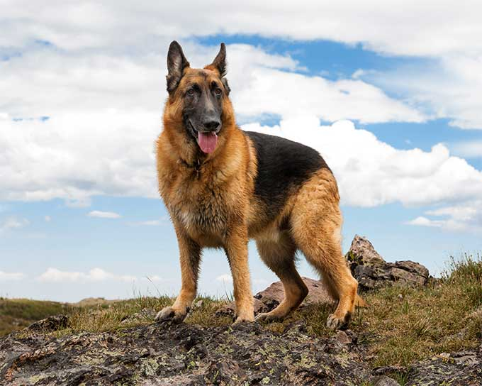
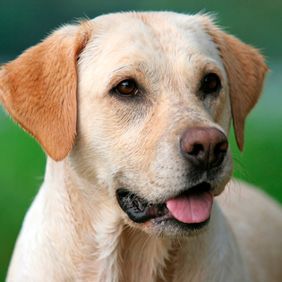
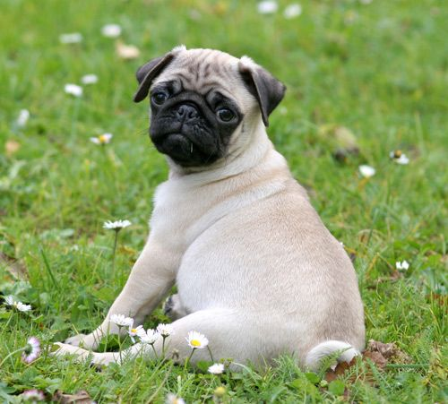

Filter by:
OR
Search for a specific dog:
 |
The Labrador Retriever, or just Labrador, is a type of retriever-gun dog. The Labrador is one of the most popular breeds of dog in Canada, the United Kingdom and the United States. | |
 |
The Pug is a breed of dog with physically distinctive features of a wrinkly, short-muzzled face, and curled tail. | |
|  | The German Shepherd is a breed of medium to large-sized working dog that originated in Germany. The breed's officially recognized name is German Shepherd Dog in the English language. | |
|  | The Labrador Retriever, or just Labrador, is a type of retriever-gun dog. The Labrador is one of the most popular breeds of dog in Canada, the United Kingdom and the United States. | |
|  | The Pug is a breed of dog with physically distinctive features of a wrinkly, short-muzzled face, and curled tail. | |
 |
The German Shepherd is a breed of medium to large-sized working dog that originated in Germany. The breed's officially recognized name is German Shepherd Dog in the English language. |